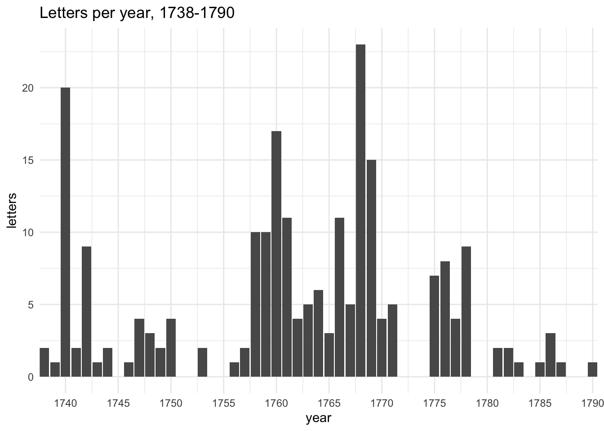
The Bluestocking Corpus: Letters by Elizabeth Montagu, 1730s-1780s
letters
networks
womens history
Introduction
This post for Women’s History Month 2020 explores the Bluestocking Corpus of Elizabeth Montagu’s letters, created by Anni Sairio.*
This first version of the Bluestocking Corpus consists of 243 manuscript letters, written by the ‘Queen of the Blues’ Elizabeth Montagu between the 1730s and the 1780s. Elizabeth Montagu (née Robinson, 1718-1800) was one of the key figures of the learning-oriented Bluestocking Circle in eighteenth-century England. She was a literary hostess, coal mine owner and patron of arts who published a popular essay in defense of Shakespeare against Voltaire’s criticism. In its current form the corpus contains 183,000 words
A warning: I know virtually nothing about Elizabeth or her circle, so everything that follows is likely to be a) obvious or worse b) infuriatingly stupid and wrong to better-informed researchers. But I wanted to take a look at the data Anni has so generously created and made available, and show some of the things that could be done with it.
* The Bluestocking Corpus: Private Correspondence of Elizabeth Montagu, 1730s-1780s. First version. Edited by Anni Sairio, XML encoding by Ville Marttila. Department of Modern Languages, University of Helsinki. 2017. 28 March 2020. http://bluestocking.ling.helsinki.fi/
[Note: the Helsinki URL is no longer available, but the site (including the data) is archived in the Wayback Machine.]
Overview
There are 243 letters in the corpus, and 21 different recipients. I’ve extracted metadata from the marked-up letters, as well as a set of plain text versions for textmining.
Most letters were sent during the 1760s but the numbers are very variable from one year to the next. (This excludes 19 undated letters.)
There are some substantial differences between letters sent to women and to men. While there were 10 female and 11 male correspondents, Elizabeth sent 178 letters to women (ave 17.8 per recipient) and only 65 to men (5.9 per recipient). On average, letters to women were also longer (mean 705.5 words per letter cf. 675.3 for men; median 632.5 for women and 572.0 for men).
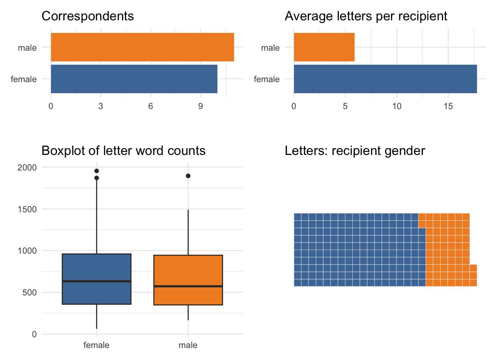
A further gendered difference can also be found in the type of correspondents (as tagged by Anni), notably the different balance of letters sent to family or friends.
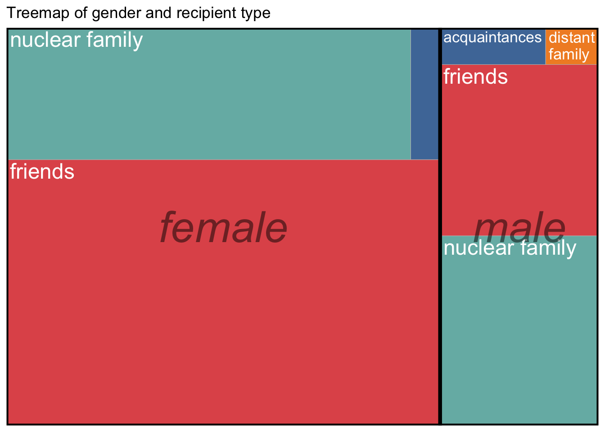
A closer look at correspondents
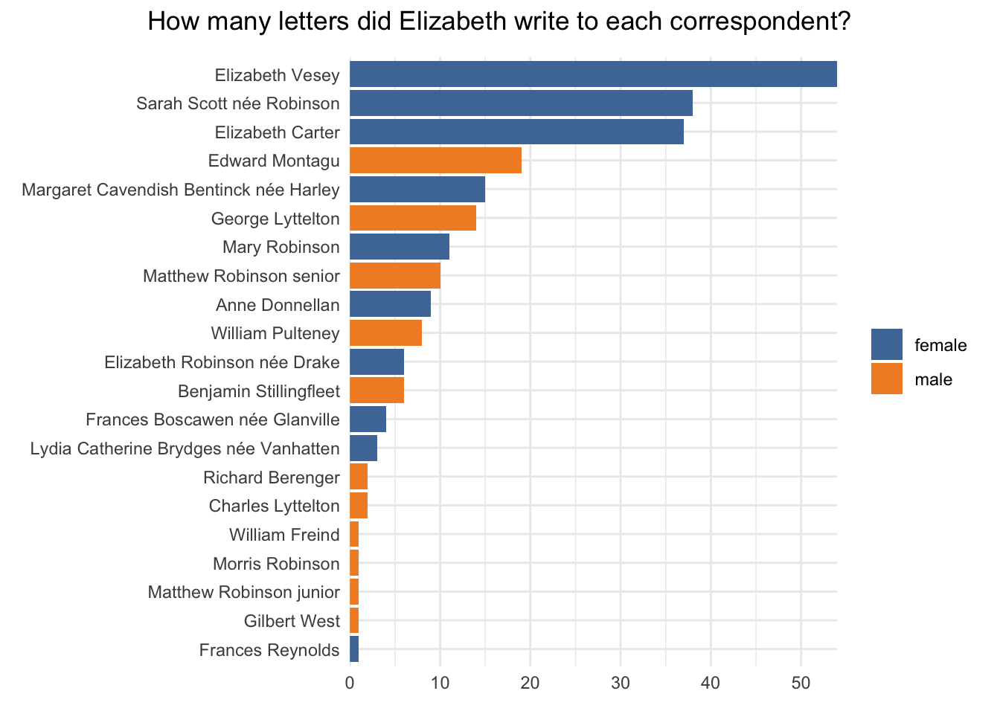
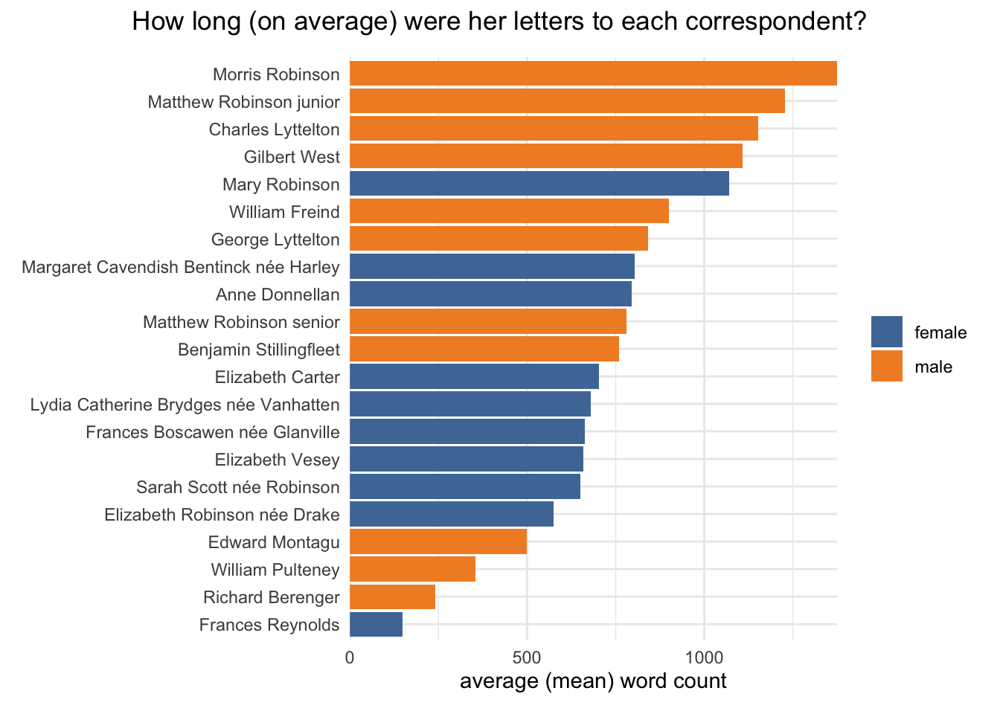
The differences raise a question: is there any kind of correlation between number of letters and average length?
There isn’t a simple pattern here; it’s clear that most letters to male correspondents are at the longer end of the spectrum, but they also tend to get the shortest letters. (The plot uses name codes for readability; the names are listed below.)
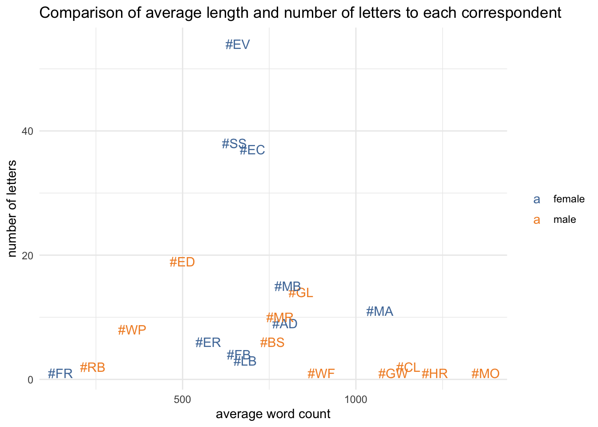
| shortcode | correspondent | letters |
|---|---|---|
| #AD | Anne Donnellan | 9 |
| #BS | Benjamin Stillingfleet | 6 |
| #CL | Charles Lyttelton | 2 |
| #EC | Elizabeth Carter | 37 |
| #ED | Edward Montagu | 19 |
| #ER | Elizabeth Robinson née Drake | 6 |
| #EV | Elizabeth Vesey | 54 |
| #FB | Frances Boscawen née Glanville | 4 |
| #FR | Frances Reynolds | 1 |
| #GL | George Lyttelton | 14 |
| #GW | Gilbert West | 1 |
| #HR | Matthew Robinson junior | 1 |
| #LB | Lydia Catherine Brydges née Vanhatten | 3 |
| #MA | Mary Robinson | 11 |
| #MB | Margaret Cavendish Bentinck née Harley | 15 |
| #MO | Morris Robinson | 1 |
| #MR | Matthew Robinson senior | 10 |
| #RB | Richard Berenger | 2 |
| #SS | Sarah Scott née Robinson | 38 |
| #WF | William Freind | 1 |
| #WP | William Pulteney | 8 |
Simple textmining: distinctiveness
There are many sorts of questions you can explore using textmining; one involves looking for the most distinctive words in particular types or groups of documents.
A commonly used method for this is TF-IDF (Term Frequency Inverse Document Frequency). This helps to account for the fact that by far the most frequently used words in most corpora are “function words” (“the”, “and”, etc).
The idea of tf-idf is to find the important words for the content of each document by decreasing the weight for commonly used words and increasing the weight for words that are not used very much in a collection or corpus of documents… Calculating tf-idf attempts to find the words that are important (i.e., common) in a text, but not too common.
So it can be useful for looking at particularly distinctive words in letters to individual correspondents (this is restricted to 12 people who were sent at least 6 letters, and to the top 8 words - if there are more than 8 it’s because there’s a tie). There are some interesting differences. Most of the top 8 words to Elizabeth Vesey are people’s names; that’s also true of letters to Elizabeth Carter but they’re names like “Milton”, “Jean” and “Jacques/Jaques” (Jean Jacques Rousseau? closer reading needed at this point!). Letters to Mary Robinson are talking about “nieces” and “measles” (again, could there be a direct connection?); letters to Anne Donnellan seem unusually concerned with morality and behaviour (“flattery”, “vice”, “impertinence”); and letters to Benjamin Stillingfleet with more practical topics (“baker”, “coals”, “starch”).
It’s important to bear in mind that these reflect only part of all the things that Elizabeth might have written to those people about, but they may be pointing to significant differences that are worth further conventional close-reading investigation. (Conversely, you might use textmining to look for the greatest similarities between letters to different correspondents.)
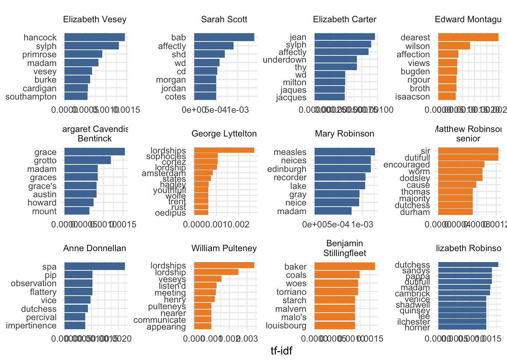
An alternative method for measuring distinctiveness is weighted log odds ratios. While TF-IDF is very popular, there are some problems with using it for this kind of analysis:
One of the problems with using tf-idf for stylistic analysis is that if everyone uses them they’ll get a score of 0 even if some people use them a whole lot more than others.
That’s obviously a particular issue if I’m trying to compare a small number of grouped documents - “male” and “female”.
In fact I’m not sure how well log odds ratios work in this particular case; though there are some potentially interesting differences, some seem too obvious to provide much insight. But perhaps it is telling us something less obvious: the fact that there are a lot of “function” words on both sides (“she” and “her” at the top of the female side, for example) may be suggesting that the content of Elizabeth’s letters is not that strongly gendered. That is to say, she doesn’t write to men and women about massively different things, although there may be a slight lean towards domestic and leisure (“home”, “mountains”, “lake”) on the female side, and towards literary and politics on the male side (“critical” and “critick”, “interest”, “county”).
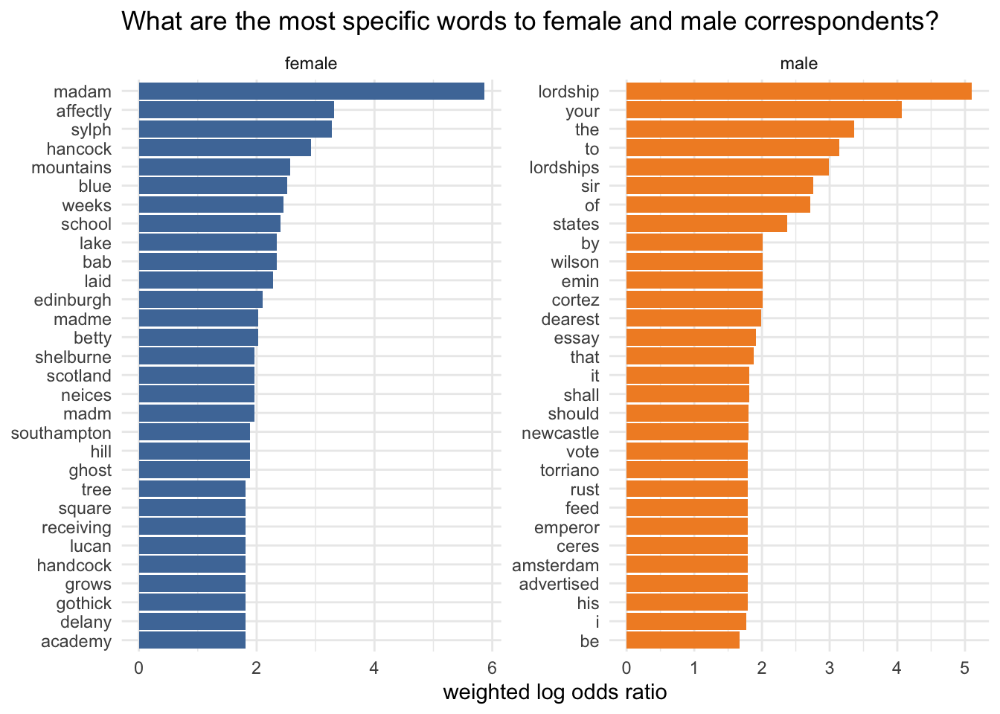
Resources
Much of the post is based on examples that can be found in the invaluable Text Mining with R by Julia Silge and David Robinson.
Social networks
People’s names have not been tagged in the letters. However, Elizabeth tends to refer to people using their titles which makes it possible to extract the majority of individuals’ names on this basis. (The titles searched for are as follows: “Miss”, “Mrs”, “Mr”, “Lord”, “Ld”, “Lady”, “Ldy”, “Dr”, “Sir”, “Sr”, “Duke of”, “Duchess of”, “Dutchess of”, “Countess of”, “Earl of”.)
Obviously this is unsatisfactory compared to manually tagging names:
However the advantage of extracting names in this way is that (with a bit of experimentation and cleaning up), it can be done in a few hours whereas manual tagging would be a substantial project. I think it has identified the majority of people mentioned in the letters, and is at least useful for an exploratory analysis.
Total distinct names found = 2321; after counting once per letter = 1859
Once again, there are some clear differences between letters to women and to men.
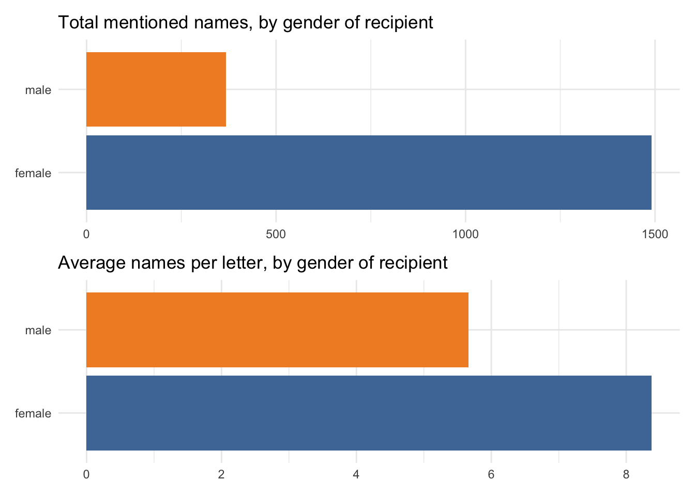
What are the most commonly mentioned names?
The most frequently mentioned name (and the name mentioned to the most recipients, though I’m not showing that here) is
Mr Montagu. Several other top names are presumably also Elizabeth’s regular correspondents -Mrs Carter,Mrs Vesey,Mrs Donnellan, etc.Another popular name - with both female and male recipients - is
Lord Lyttelton. But it’s noticeable that in letters to female recipients, a much higher proportion of names mentioned here are female (17 of 23, vs only 6 of 23 in letters to male recipients).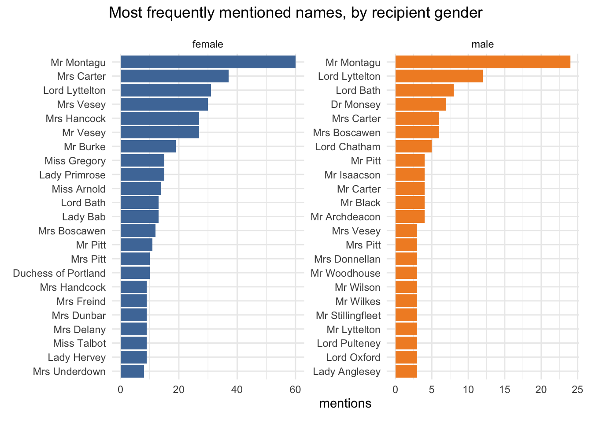
Does that pattern extend to all names mentioned rather than just the most common ones? Overall the gender of mentioned names in letters to women ends up quite evenly balanced, but only 25% of names mentioned in letters to men are female.
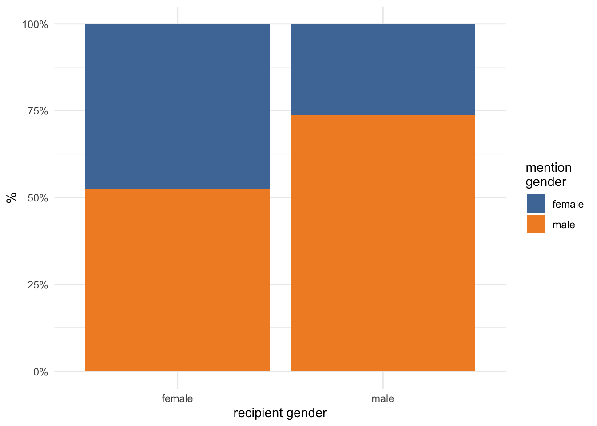
A closer look at names mentioned to Elizabeth’s most written-to female correspondents shows not only differences in their networks, but also intriguing differences in mentions patterns. An extremely high proportion of the names in letters to Margaret Cavendish Bentinck are only mentioned once (which is why her graph looks such a mess and you can’t read any of them properly…). This happens to some extent with Anne Donnellan as well, but she was sent only 9 letters compared to Margaret’s 15, and it’s much less extreme with Mary Robinson (who was sent 11 letters).
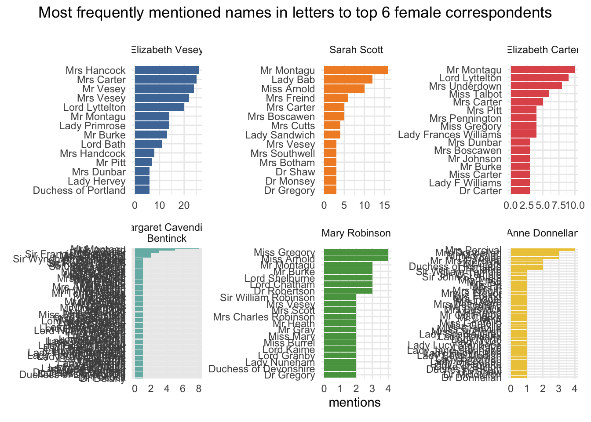
Which names are most connected?
This correlation plot visualises the correlations between the most frequently mentioned names in letters to female correspondents. The darker the shade, the stronger the positive (red) or negative (blue) association. (A score of +1 would mean that two names always appear together, and a score of -1 that they always appear separately.)
Because it’s so compact it needs to be read with some care. As an example, for
Mrs Veseyyou’d read down and then across to see that she’s most strongly positively connected withLady Primroseand most negatively correlated withLady Bab. Interestingly,Mr Montagu, who we know is more frequently mentioned than anyone else, isn’t very positively correlated with anyone (except perhapsLady Bab). This may simply be because he’s mentioned so often, but it might alternatively suggest that letters about him are less likely to mention other people.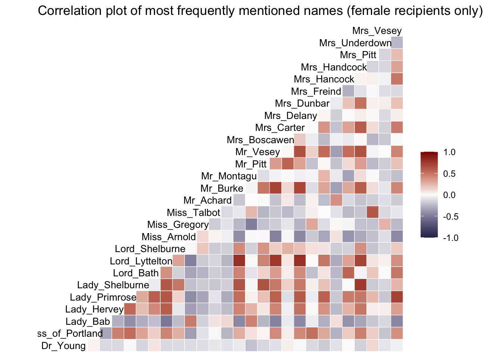
Since I’m talking about social networks, I’ll finish up with a classic network graph. Again, this includes only letters to female correspondents, and is restricted to relatively strong connections; the darker the line, the stronger the correlation between individuals.
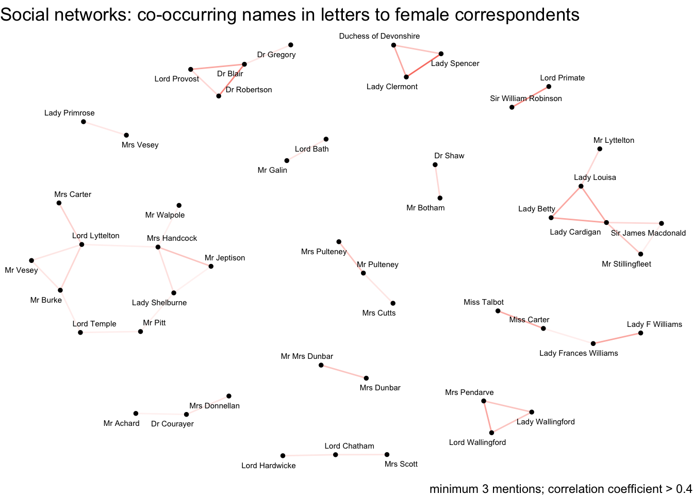